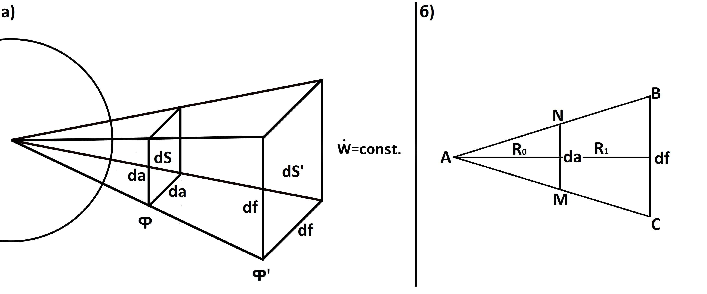

Место учебы: Студент, 2-ой курс Бакинский филиал Московского государственного университета имени М.В.Ломоносова, Физический факультет, Баку, Азербайджан
Рубрика: Физика
Почта: g703mrx@mail.ru
Дата публикации: 18.07.2021
Введение:
Написание данной работы было начато еще в школьные годы, как следствие необходимости создания математического аппарата для моделирования идеи другой работы, связанной с изменением климата на планетах, в зависимости от изменения угла наклона эклиптики планет. В те годы не были хорошо известны знания мощности потока электромагнитного излучения или теоремы Гаусса-Остроградского, однако похожие верные выводы формул были получены более примитивными вычислениями и рассуждениями. Позже работа была использована в качестве основы для написания курсовой работы, и с помощью научного руководителя была более глубоко проработана физика рассматриваемого процесса и уровень используемого для выводов математического аппарата.
Аннотация:
Целью данной работы является установление универсальной взаимосвязи для описания излучений источников, основанных на нуклеосинтезе, через их ядерные процессы, порождающие соответствующие им излучения.
Ключевые слова:
Мощность потока электромагнитного излучения, спектральная плотность электромагнитного излучения, энергетическая светимость, светимость абсолютно черного тела, интенсивность термоядерного синтеза, постоянная термоядерного синтеза, сечение реакции, протон-протонная цепочка, CNO цепочка.
Однородное тепловое излучение
Для начала рассмотрим однородный поток электромагнитного излучения энергии, и поверхность, внесенную в данный поток. В таком однородном потоке, на любом его участке, внесенная поверхность, за равные промежутки времени, должна получать одинаковое количество теплоты.
Сразу заметим, что количество теплоты, приходящее на поверхность под определенным углом к источнику, численно равно количеству теплоты, проходящему через действующую проекцию площади данной поверхности, по отношению к источнику (рис.1).
Рисунок 1. Действующая проекция поверхности.
И тогда, для того чтобы охарактеризовать данный поток излучения энергии, воспользуемся формулой мощности потока электромагнитного излучения. Мощность потока электромагнитного излучения – это величина, численна равная отношению энергии излучения, проходящему через единичную площадь поверхность, под прямым углом к источнику, за единицу времени. Поскольку dW линейно зависит от dt и dSy, и поскольку поток однородный, то на любом участке вдоль данного теплового потока, мощность потока будет постоянной величиной, характеризующий именно данный электромагнитный поток энергии.
Тогда, количество теплоты, приходящее на любую внесенную площадь поверхности в данном однородном тепловом потоке, под любым произвольным углом к источнику, и за любой промежуток времени будет равным:
Где W – энергия электромагнитного излучения, приходящая на данную рассматриваемую площадь поверхности S; Φ – мощность электромагнитного излучения данного однородного теплового потока; α - высота источника над горизонтом.
Неоднородное тепловое излучение
В природе, источники, основанные на постоянном термоядерном синтезе – это звезды. Однако, поскольку для дальнейших теоретических расчетов, нам придется знать как описывать неоднородное электромагнитное излучение Солнца, нужно рассмотреть физику неоднородного электромагнитного излучения более подробно. Неоднородный тепловой поток – это такая физическая модель электромагнитного излучения, у которой плотность потока на разных отдалениях от источника бывает различна. Чем ближе располагается поверхность к источнику, который создает неоднородный поток электромагнитного излучения, тем мощнее будет приходить поток на его поверхность, а по мере отдаления, мощность потока будет падать по определенному закону, который нам предстоит вывести в этом разделе.
Общий тепловой поток, испускаемый звездой, аналогично справедливо рассматривать отдельными выделенными пучками, составляющими один общий поток. Тогда, для каждого такого выделенного пучка потока электромагнитного излучения, очевидно, справедливым является dW⁄dt=const (следствие закона сохранения энергии). То есть, вдоль каждой выделенной области пучка теплового потока, через любую площадь ее сечения, за равные промежутки времени, должно проходить одинаковое количество теплоты, поскольку алгебраическая сумма теплоты, переносимых всеми выделенными пучками потока, должно оставаться постоянной величиной, и равной общему количеству теплоты испускаемой звездой за тот же промежуток времени.
Рассмотрим бесконечно узкий выделенный пучок теплового потока (чтобы его можно было рассматривать однородным вдоль его сечений, которые будут описываться на бесконечно малом приближении, соответствующими уравнениями однородного электромагнитного излучения из первого раздела), и два произвольных сечения вдоль него (рис. 2, пункт а).
Рисунок 2. Выделенный пучок неоднородного потока электромагнитного излучения.
Распишем значения мощностей потоков электромагнитного излучения, проходящих через два произвольных бесконечно малых сечения, за равные промежутки времени, вдоль данного выделенного пучка:
Исходя из того что dW ⁄ dt = const, справедливым будет равенство:
На (рис.3, пункт б) ∆ABC - это центральное сечение выделенного потока электромагнитного излучения правильной пирамидальной формы, показанного в пункте а. И тогда из подобия ∆ABC~∆ANM, имеем:
Поэтому:
Как теперь видно из равенства, для данного звездного теплового потока произведение ΦR2 является постоянной физической величиной, то есть всегда равно некоторой константе:
В конечном итоге имеем:
Мощность потока излучения падает обратно пропорционально квадрату расстояния до центра сферического источника, где λ [Вт] – коэффициент мощности излучения данного источника. Данный коэффициент является основной характеристикой теплового потока для конкретно данного источника.
Общая энергия теплового излучения источника
Для того, чтобы определить общую испускаемую энергию потока электромагнитного излучения звезды, рассмотрим количество теплоты, проходящее через сферическую площадь, окружающую звезду, на произвольном отдалении от центра звезды (рис.3).
Рисунок 3. Сферическая площадь, окружающая излучение звезды.
Рассмотрим элементарный участок сферы dS, на которое приходит некоторое количество теплоты dw.
Учитывая уравнение (1), выделим из получившегося равенства телесный угол, определив его как отношения элемента участка сферы dS к квадрату его радиуса, и проинтегрируем обе части равенства по замкнутому сферическому контуру и полному телесному углу:
Полный телесный угол определяется как отношение полной поверхности сферы на квадрат радиуса сферы, поэтому:
И тогда:
По данной формуле (2) определяется общая энергия излучения dW, испускаемая звездой за времени dt.
Излучение абсолютно черного тела
Рассмотрим физику излучения звезд через представление излучения абсолютно черного тела с квантово-механическим подходом, в котором, излучение осуществляется квантами энергии.
Для начала получим функцию спектральной плотности электромагнитного излучения, с учетом, что излучение происходит квантами энергии. Другими словами, получим формулу распределения мощности энергии по всем возможным квантам частот соответствующих энергий.
Как известно, спектральная плотность мод колебаний стоячих волн единицы объема абсолютно черного тела, приходящих на интервал частот от ω до ω + dω, определяется следующей формулой:
Тогда, согласно теореме равнораспределения средней энергии (kT) по колебательным степеням свободы, получим следующее выражение для спектральной плотности электромагнитного излучения единицы объема абсолютно черного тела (формула Рэлея-Джинса):
Поскольку данная формула допускает строго прямо-пропорциональную зависимость от частоты, то при увеличении частоты до бесконечности, функция спектральной плотности электромагнитного излучения также будет стремится к бесконечности, что является абсурдным результатом, и называется в физике «Ультрафиолетовой катастрофой».
Для того, чтобы перейти к квантово-механическому описанию процесса, и уйти от проблемы «Ультрафиолетовой катастрофы», рассмотрим механизм излучения, согласно гипотезе Планка, порциями излучений соответствующих квантов энергий. Пусть энергия элементарного кванта излучения равна ε, тогда энергия такого осциллятора дискретно будет меняется следующим образом:
Рассмотрим вероятность обнаружения соответствующего энергетического уровня, предположив, что распределение данной вероятности подчиняется распределению Больцмана:
Пронормируем константу A по всем возможным распределениям энергетических уровней, учитывая, что ∑Pn = 1:
И тогда:
На основе данного распределения вероятности обнаружения соответствующего энергетического уровня, определим среднюю энергию колебаний каждого такого осциллятора:
Таким образом, при квантово-механическом рассмотрении, средняя энергия одной моды колебаний, будет равна:
И тогда, формула спектральной плотности электромагнитного излучения, будет определяться уже следующим образом:
Согласно же гипотезе Планка:
Теперь, поскольку знаменатель также зависит экспоненциально от частоты, то при высоких частотах, рост экспоненты в знаменателе будет преобладать над кубическим ростом частоты в числителе, и формула будет давать правильную форму графика зависимости.
Рисунок 4. Графики функций Рэлея-Джинса, Вина и Планка спектральных плотностей излучения.
Дальше, для того, чтобы рассчитать энергию, которую излучает абсолютно черное тело с единичной площади поверхности, покажем, как спектральная плотность испускательной способности связана со спектральной плотностью излучения данного абсолютно черного тела:
Тогда, светимость абсолютно черного тела с единичной поверхности, будет определятся как интеграл от спектральной плотности испускательной способности по всем возможным квантам частот соответствующих энергий.
Заранее обозначив интегральную испускательную способность абсолютно черного тела (энергетическую светимость) с индексом «э» - энергетическая, чтобы в дальнейшем не путать с радиусом звезды, посчитаем его значение:
В конечном итоге получаем закон Стефана-Больцмана:
где σ – постоянная Стефана-Больцмана, равная \[\sigma=\frac{\pi^{2}k^{4}}{60\hslash^{3}c^{2}}\approx5.67\cdot10^{-8}\left[\frac{Вт}{м^{2}К^{4}}\right]\].
Дальше распишем определение закона Стефана-Больцмана как энергию, которая выделяется за единицу времени с единичной поверхности:
Учитывая, что dW / dS = L и проинтегрировав правую часть по замкнутому сферическому контуру, получим формулу вычисления светимости звезды, зная абсолютную температуру его поверхности и геометрические размеры звезды:
Итак, применив формулу (2) к определению светимости абсолютно черного тела, получим:
Откуда выразим коэффициент мощности излучения (λ), которое как видно является мерой светимости источника:
Подставив значение λ в (1), получим:
Таким образом, если мы рассматриваем неоднородный тепловой поток, то формула мощности потока электромагнитного излучения приобретает физический смысл плотности распределения светимости источника по внутренней поверхности сферы, нужного нам радиуса.
Источник на основе нуклеосинтеза
Теперь определим физический смысл коэффициента пропорциональности мощности излучения источника, определяющий тепловой поток данного источника, связав его с ядерными процессами, которые и создают соответствующий ему поток электромагнитного излучения.
В следствии термоядерных реакций, протекающих в звездах, общая излишняя энергия связи в атомах, выделяется в виде дальнейшего потока электромагнитного излучения частиц. Следовательно, имея значение общего дефекта масс (масса, теряемая звездой за единицу времени, за счет постоянного излучения во внешнее пространство фотонов и нейтрино), по уравнению Эйнштейна можно определить общее количество теплоты, испускаемое источником за единицу времени. Таким образом, значение коэффициента мощности излучения для каждого источника, основанного на нуклеосинтезе, будет определяться следующей связкой:
Пусть за бесконечно малый промежуток времени dt источник потерял массу dm, то есть выделил за данный промежуток времени энергию dW = dmc2, тогда учитывая данное значение в уравнении (2) имеем:
Выразим отсюда мощность излучения источника в следующем виде:
Как теперь становится видно, в равенстве отношение c2 / 4π является неким постоянным коэффициентом пропорциональности для данного равенства. А значение выражения dm / dt является основным отношением, которое характеризует ядерные процессы в данном источнике, и через которое определяется значение мощности излучения источника. Обозначим отношение c2 / 4π через γ (учитывая при этом в конечной записи, что c=1 / √(ε0μ0)), а dm / dt через ψ.
В итоге имеем:
Тут λ – мощность излучения источника; γ – постоянная термоядерного синтеза (данная величина является постоянным эквивалентом между ядерными процессами и создаваемыми при их протекании тепловыми); ψ - интенсивность термоядерного синтеза (или общий дефект масс, теряемый источником за единицу времени, для превращения ее в тепловую энергию своего излучения). Мощность излучения источника переменной массы (λ) зависит только от интенсивности термоядерного синтеза в нем (ψ).
С большим течением времени значение коэффициента мощности излучения звезд может меняться, в следствии, характера изменений термоядерных процессов в них (интенсивность термоядерного синтеза в разные периоды жизни звезд бывает различна). Однако на довольно большие, по астрономическим меркам, промежутки времени, данный коэффициент должен оставаться постоянной величиной для каждой звезды, что делает применение данного коэффициента в качестве центрального при вычислениях очень практичным.
Теперь учитывая данный закон (3) в уравнении (1) покажем как мощность потока электромагнитного излучения, доходящего на некоторое отдаление от источника, зависит от интенсивности протекания термоядерных реакций в нем:
Мощность потока электромагнитного излучения, доходящего на некоторое отдаление R, от источника, основанного на нуклеосинтеза, прямо-пропорционально интенсивности термоядерного синтеза в нем, и обратно пропорционально квадрату расстояния до этого источника, где γ - это постоянная термоядерного синтеза, равная \[\gamma=\frac{1}{4\pi \epsilon_{0}\mu_{0}}\approx7.152\cdot 10^{15}\].
В данных терминах более правильно дать обозначение γ как постоянной «термоядерного синтеза», нежели «нуклеосинтеза», поскольку само уравнение логически отражает результат синтеза в ярерных реакциях в тепловой поток, что словестно более ясно отражено в термине «термоядерный синтез».
Данное уравнение является основным для данной статьи, поскольку именно оно напрямую показывает, как интенсивность ядерных процессов создают соответствующие им тепловые потоки, что и являлось изначальной целью данной работы.
Так же получим формулу общего количества теплоты, испускаемого источником за промежуток времени ∆t, через ядерные процессы.
В случае, если необходимо подсчитать количество теплоты, испускаемое источником в промежутке времени на котором характером изменения интенсивности термоядерного синтеза нельзя пренебречь, но мы знаем закон, по которому происходит это изменение, то в формуле (12) мы можем рассматривать интенсивность термоядерного синтеза как его усредненное значение на всем этом рассматриваемом промежутке времени. Которое в свою очередь равно:
И тогда:
Где ψ(t) - это закон, по которому происходит изменение интенсивности термоядерного синтеза со временем.
Таким образом, формула (5) является частным случаем формулы (6), при ψ(t)=ψ=const.
Теоретические расчеты
Для сопоставления теоретических расчетов воспользуемся значением экспериментально установленной величины Солнечной постоянной. По определению, Солнечная постоянная – это суммарная мощность потока Солнечного излучения, проходящего через единичную площадку, ориентированную перпендикулярно потоку, на расстоянии одной астрономической единицы от Солнца вне Земной атмосферы. То есть, это и есть мощность потока электромагнитного излучения, доходящая от Солнца до Земли (Φ(С-З)). По экспериментально установленным данным значение данной величины составляет 1367 ± 6 [Вт / м2].
Для теоретического подсчета значения данной величины по формуле (4) сперва необходимо установить значение интенсивности термоядерного синтеза на Солнце.
Практическую формулу для прямого подсчета интенсивности термоядерного синтеза в звездах можно получить продифференцировав уравнение Эйнштейна по времени:
И тогда, в получившейся связке, значение \[\dot{E}\] приобретает физический смысл светимости источника переменной массы (L), а \[\dot{m}\] интенсивности термоядерного синтеза в данном источнике (ψ).
Отсюда, подсчитав значение интенсивности термоядерного синтеза для Солнца, приняв значение светимости Солнца L = 3.827∙1026 Вт, получим значение:
Каждую секунду Солнце теряет такое количество массы, преобразуя ее в энергию своего излучения.
Итак, теперь имея значение интенсивности термоядерного синтеза на Солнце, подсчитаем среднее значение Солнечной постоянной получим:
Как видно, теоретически подсчитанное значение Солнечной постоянной попадает в интервал погрешностей экспериментально установленного значения данной величины.
Заключение
В данной работе была установлена универсальная взаимосвязь для прямого описания свойств потоков электромагнитного излучения источников переменной массы через основную характеристику термоядерных процессов в них. В процессе вывода основного уравнения, также попутно выводились ранее известные отдельные свойства тепловых потоков на основе выкладок со школьных лет. Вместе с этим, была более глубоко проработана ядерная физика рассматриваемого процесса, с целью обладания знания механизма формирования потока электромагнитного излучения на основе образующихся частиц в этих ядерных реакциях.
Итак, для описания свойств любых потоков электромагнитного излучения от источников, основанных на нуклеосинтезе, необходимо сперва знать величину интенсивности термоядерного синтеза в данном источнике, которое можно определить по формуле (7). После, уже имея все необходимые величины для установления значения мощности потока электромагнитного излучения по формуле (3), можно описывать все свойства рассматриваемого теплового потока, образованного от излучения источника переменной массы.
Соответствующие теоретические расчеты были проведены в 4-ом пункте данной статьи, и полученное теоретическое значение попало в диапазон экспериментально установленного значения величины Солнечной постоянной.
Список литературы
1. Физика. Большой энциклопедический словарь/Гл. ред. А. М. Прохоров. — 4-е изд. — М.: Большая Российская энциклопедия, 1999. — С. 874—876. ISBN 5-85270-306-0 (БРЭ)
2. Кудряшов Ю. Б., Перов Ю. Ф. Рубин А. Б. Радиационная биофизика: радиочастотные и микроволновые электромагнитные излучения. Учебник для ВУЗов
3. Алмалиев А. Н., Копытин И. В., Корнев А. С., Чуракова Т. А. Термодинамика и статистическая физика: Статистика идеального газа. — Воронеж: Ворон. гос. ун-т, 2004. — 79 с.
4. Базаров И. П. Термодинамика. — 5-е изд. — СПб. — М. — Краснодар: Лань, 2010. — 384 с. — (Учебники для вузов. Специальная литература). — ISBN 978-5-8114-1003-3.
5. Гуггенгейм. Современная термодинамика, изложенная по методу У. Гиббса / Пер. под ред. проф. С. А. Щукарева. — Л. — М.: Госхимиздат, 1941. — 188 с.
6. Новиков И. И. Термодинамика. — М.: Машиностроение, 1984. — 592 с.
7. Сычёв В. В. Сложные термодинамические системы. — 5-е изд., перераб. и доп.. — М: Издательский дом МЭИ, 2009. — 296 с. — ISBN 978-5-383-00418-0.
8. Мартинсон Л. К., Смирнов Е. В. Квантовая теория // Физика в техническом университете, 5-й том. — МГТУ им. Н. Э. Баумана.
9. Clayton, Donald D. (англ.)русск.. Principles of Stellar Evolution and Nucleosynthesis (англ.). — New York: McGraw-Hill Education, 1968.
10. Clayton, Donald D. Handbook of Isotopes in the Cosmos. — Cambridge: Cambridge University Press, 2003. — ISBN 978-0-521-82381-4.
11. Bethe, H. A., Critchfield, C. L., «The formation of deuterons by proton combination.» // Physical Review 54, no. 4 (1938): 248.
12. E. E. Salpeter, Nuclear Reactions in the Stars. I. Proton-Proton Chain // Phys. Rev. 88, 547 — 1 November 1952 doi:10.1103/PhysRev.88.547
13. Углеродный цикл / Д. К. Надёжин // Физика космоса: Маленькая энциклопедия / Редкол.: Р. А. Сюняев (Гл. ред.) и др. — 2-е изд. — М. : Советская энциклопедия, 1986. — С. 679—681. — 70 000 экз.
14. Биленький С. М. Рассеяние микрочастиц // Физическая энциклопедия / Ред. А. М. Прохоров. — М.: Советская энциклопедия, 1992. — Т. 4. — С. 271-273.
15. Широков Ю. М., Юдин Н. П. Ядерная физика. — М.: Наука, 1972. — 670 с.